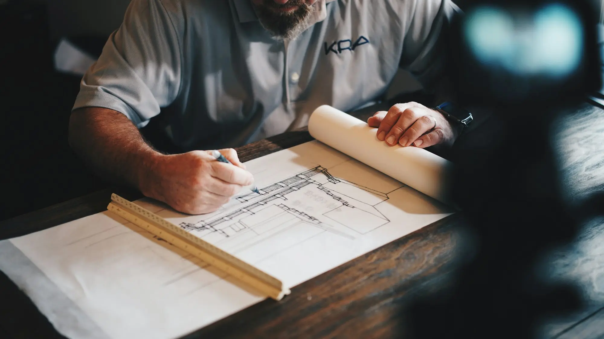

Catasto e topografia
Rilievi e aggiornamenti catastali per case, terreni e capannoni.
- Accatastamenti e variazioni (DOCFA)
- Frazionamenti e tipi mappali (PREGEO)
- Volture e visure
- Rilievi e picchettamenti
Ravenna e provincia
Catasto, pratiche edilizie, certificazioni energetiche e successioni. Un referente unico che segue la tua pratica dal sopralluogo alla consegna, con tempi chiari fin dal primo contatto.
Telefono 0544 000000da verificare, risposta in giornata nei giorni lavorativi.

Le pratiche più richieste da privati e piccole imprese del ravennate. Se la tua esigenza non è qui, chiamami: ti dico subito se posso seguirla io.
Rilievi e aggiornamenti catastali per case, terreni e capannoni.
La parte burocratica di ogni intervento, gestita con il Comune.
Le certificazioni che servono per vendere, affittare o ristrutturare.
Supporto nei passaggi di proprietà e nelle valutazioni immobiliari.
Quattro passaggi, così sai sempre a che punto è la tua pratica.
Una telefonata per capire di cosa hai bisogno e se serve un sopralluogo.
Rilievo sul posto e preventivo scritto, con tempi e costi chiari.
Preparo e deposito la pratica agli enti, tenendoti aggiornato.
Ti consegno i documenti definitivi e resto a disposizione dopo.
Sono il Geom. Claudio Babini. Lavoro a Ravenna seguendo di persona ogni pratica, dal primo rilievo fino al deposito agli enti. Parlo chiaro, niente tecnicismi inutili: ti spiego cosa serve, quanto costa e quanto tempo richiede.
Seguo privati, famiglie e piccole imprese del territorio. Conoscere gli uffici e i regolamenti locali fa la differenza sui tempi di una pratica.
Ravenna e i comuni della provincia. Se il tuo immobile è qui intorno, posso raggiungerti per il sopralluogo.
Elenco comuni indicativoda verificare
Dimmi di cosa hai bisogno: ti dico subito come procedere e che tempi aspettarti.